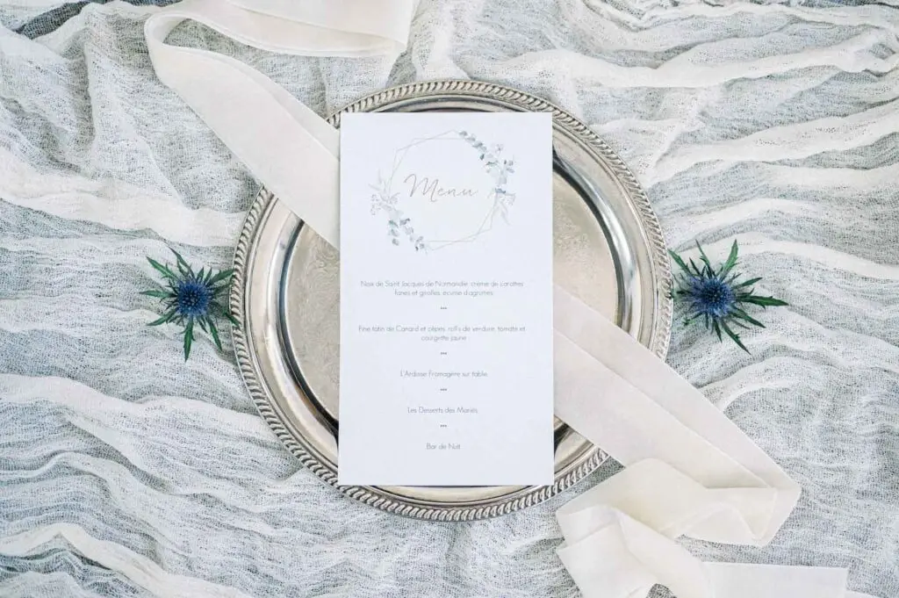
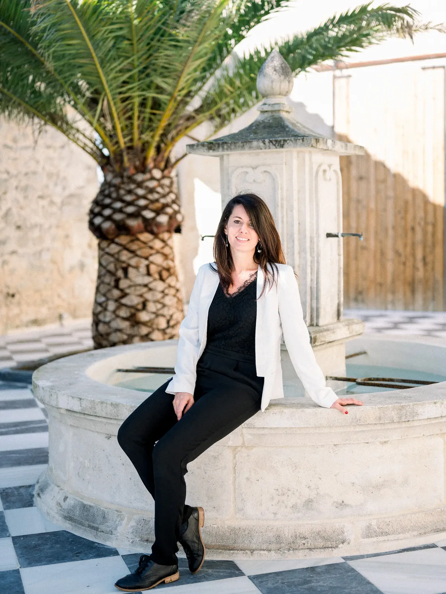
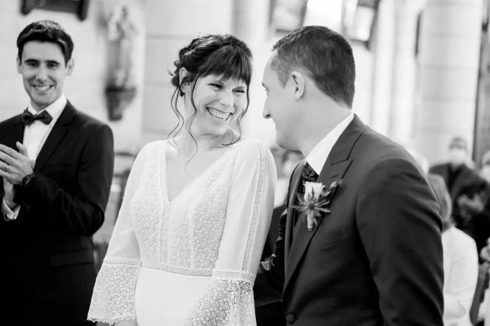
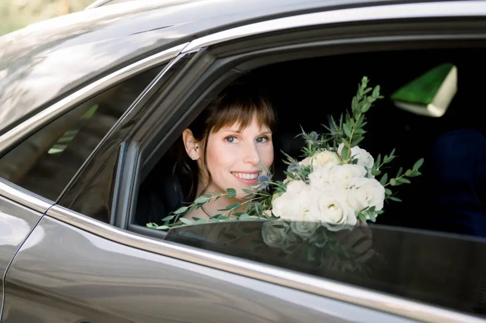
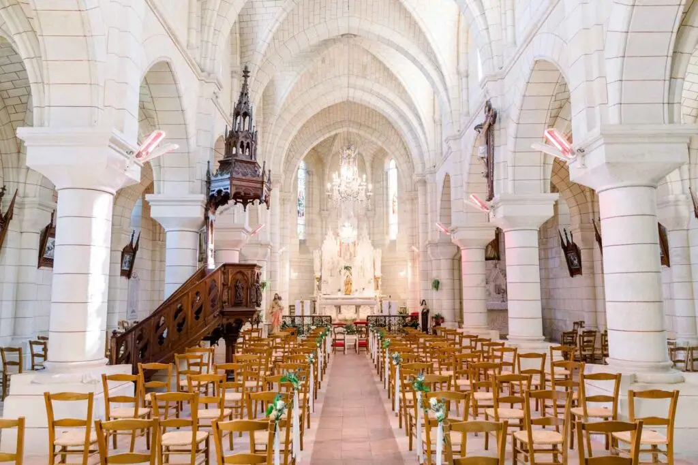
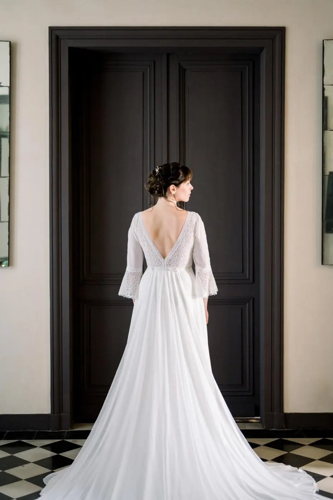
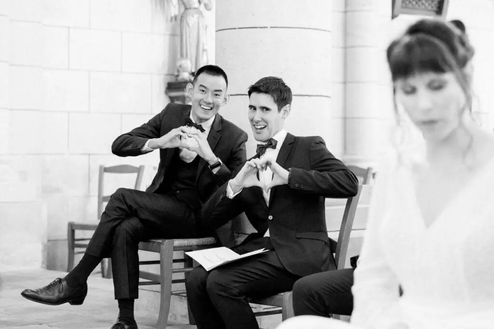
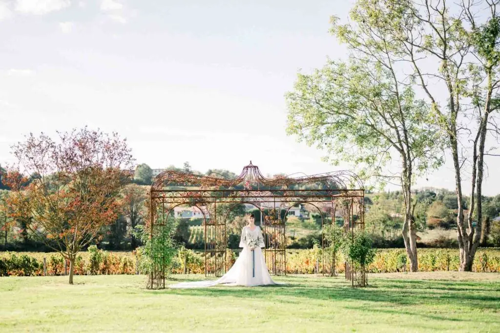
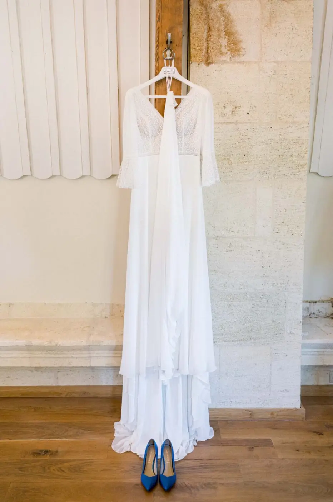
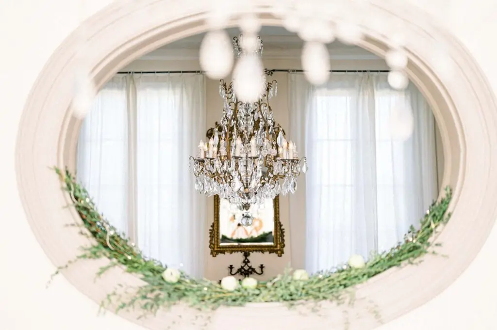

Tristan Perrier
Le mariage est une étape de vie unique, chargée d’émotions, que vous n’êtes pas prêts d’oublier… Alors autant bien choisir celui qui sera chargé d’en garder la mémoire.
Laissez-moi vous présenter Tristan Perrier, photographe de mariage éditorial basé à Bordeaux. Ce n’est pas par hasard que j’ai choisi de vous le présenter : Tristan est un photographe aux grandes qualités humaines et professionnelles, et nous travaillons ensemble depuis de nombreuses années lors de mariages dans la région de Bordeaux et au-delà.
 © Tristan Perrier
© Tristan Perrier

Sa passion ? La photographie, depuis toujours. Tristan est une personne très sensible, profondément attachée aux relations humaines. Sa devise : la communication, le partage et surtout la bienveillance. Au-delà des images, il propose une expérience personnalisée, construite sur la confiance, la discrétion et l’exigence du détail, pour que les mariés se sentent pleinement à l’aise et vivent leur journée avec naturel.
Depuis plus de dix ans, il accompagne des couples en France et à l’international, avec plus de 150 mariages haut de gamme à son actif. Son approche s’inscrit dans l’héritage de la photographie fine art, enrichie d’une direction artistique éditoriale inspirée de l’univers du luxe et de la mode. Lumière naturelle maîtrisée, composition équilibrée, colorimétrie subtile, travail du mouvement et de la matière : chaque image est pensée comme une photographie d’édition. Chez Tristan, l’élégance prime toujours sur la mise en scène excessive, et l’authenticité reste au cœur de sa démarche.
Au cours du mariage de Marie-Sophie & Sébastien, en octobre 2020, Tristan et moi avons collaboré ensemble. Moi, chef d’orchestre de cette journée incroyable, et lui, photographe des festivités hors norme. Le mariage a eu lieu au Château de Garde, un lieu d’exception alliant architecture du XVIIIe siècle et décoration intérieure raffinée : le cadre parfait pour sublimer chaque détail.

© Tristan PerrierJe pourrais parler encore des heures du travail de Tristan et de sa sensibilité artistique, mais une image vaut mille mots : je vous invite à découvrir son travail directement sur son site internet, tristanperrier.fr, et à vous laisser emporter par son univers.

















Lovely Day Event c'est plusieurs types de prestations
L'organisation de mariage
Je vais intervenir sur toutes les étapes de vos préparatifs et vous guider dans vos choix. Je suis force de proposition pour que votre mariage ne ressemble qu’à vous.
Décoration de mariage
Créative et passionnée, je suis certifiée Wedding Designer et je conçois une ambiance scénographique qui correspond au thème de votre mariage.
Coordination le jour J
Je serai le chef d’orchestre pour gérer les différents prestataires, la mise en place de votre décoration et le déroulement de cette belle journée.